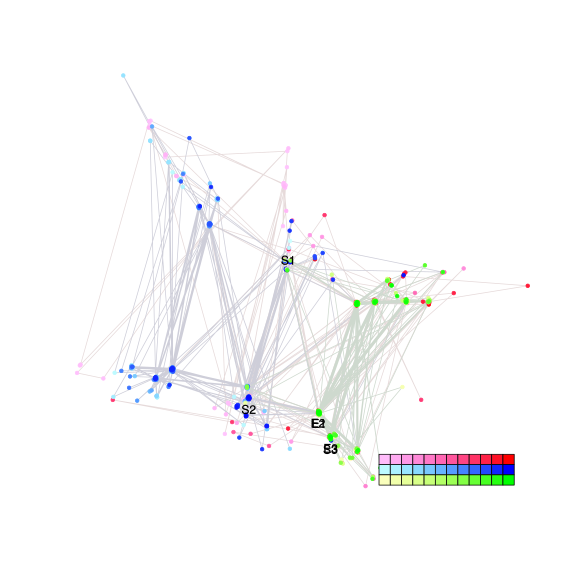
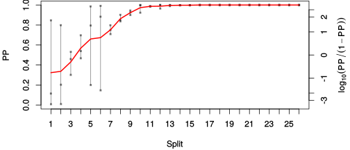
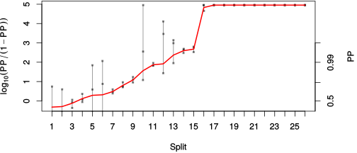

| chain # | burnin | subsample | Iterations (remaining) | command line | subdirectory | directory |
|---|---|---|---|---|---|---|
| 1 | 10000 | 1 | 90000 | bali-phy E1_AA_red3_PerissoArtio_Lambda_Alpha_Manatees_BetaGamma.fas -s 74538 -n PerissoArtio_Lambda_Alpha_Manatees_BetaGamma_c1 | PerissoArtio_Lambda_Alpha_Manatees_BetaGamma_c1-1 | /DATA/work/ONCOGENEVOL/database/trees/Bali-Phy/red3/E1 |
| 2 | 10000 | 1 | 90000 | bali-phy E1_AA_red3_PerissoArtio_Lambda_Alpha_Manatees_BetaGamma.fas -s 82345 -n PerissoArtio_Lambda_Alpha_Manatees_BetaGamma_c2 | PerissoArtio_Lambda_Alpha_Manatees_BetaGamma_c2-1 | /DATA/work/ONCOGENEVOL/database/trees/Bali-Phy/red3/E1 |
| 3 | 10000 | 1 | 90000 | bali-phy E1_AA_red3_PerissoArtio_Lambda_Alpha_Manatees_BetaGamma.fas -s 25632 -n PerissoArtio_Lambda_Alpha_Manatees_BetaGamma_c3 | PerissoArtio_Lambda_Alpha_Manatees_BetaGamma_c3-1 | /DATA/work/ONCOGENEVOL/database/trees/Bali-Phy/red3/E1 |
| P(data|M) = -28135.203 +- 3.842 | Complete sample: 755 topologies | 95% Bayesian credible interval: 263 topologies |

Phylogeny Distribution

| Partition support: Summary |
| Partition support graph: SVG |
| 50% consensus | Newick (+PP) | SVG | |||||
| 66% consensus | Newick (+PP) | SVG | |||||
| 80% consensus | Newick (+PP) | SVG | |||||
| 90% consensus | Newick (+PP) | SVG | |||||
| 95% consensus | Newick (+PP) | SVG | |||||
| 99% consensus | Newick (+PP) | SVG | |||||
| 100% consensus | Newick (+PP) | SVG | |||||
| MAP | Newick (+PP) | SVG | |||||
| greedy | Newick (+PP) | SVG |
{kind=link}
{kind=link}
{kind=link}
{kind=link}
{kind=link}
{kind=link}
{kind=link}
{kind=link}
Alignment Distribution
Partition 1
| Diff | Min. %identity | # Sites | Constant | Informative | ||||
|---|---|---|---|---|---|---|---|---|
| Initial | FASTA | HTML | Diff | 3.74% | 698 | 1 (0.143%) | 660 (94.6%) | |
| Best (WPD) | FASTA | HTML | AU | 28.6% | 1228 | 57 (4.64%) | 581 (47.3%) |


Mixing
| burnin (scalar) | ESS (scalar) | ESS (partition) | ASDSF | MSDSF | PSRF-CI80% | PSRF-RCF |
|---|---|---|---|---|---|---|
| 6556 | 74.7 | 7.125 | 0.080 | 0.460 | 1.032 | 1.02 |
Projection of RF distances for the first 3 chains3D | Variation of split PPs across chains |
Scalar variables
| Statistic | Median | 95% BCI | ACT | ESS | burnin | PSRF-CI80% | PSRF-RCF |
|---|---|---|---|---|---|---|---|
| prior | -2265 | (-2390, -2144) | 926.3 | 291 | 1214 | 1.003 | 0.9949 |
| prior_A1 | -2355 | (-2478, -2235) | 981.8 | 275 | 1969 | 1.002 | 0.9981 |
| likelihood | -2.803e+04 | (-2.812e+04, -2.794e+04) | 2307 | 117 | 6556 | 0.9993 | 0.9815 |
| logp | -3.029e+04 | (-3.038e+04, -3.022e+04) | 436.3 | 618 | 2489 | 1.008 | 1.011 |
| Heat.beta | 1 | ||||||
| Scale1 | 9.383 | (6.474, 12.93) | 1.008 | 267760 | 153 | 0.9999 | 0.9994 |
| S1.F.pi.A | 0.07581 | (0.06945, 0.08233) | 132.2 | 2042 | 482 | 1.003 | 1 |
| S1.F.pi.R | 0.045 | (0.03994, 0.05021) | 49.39 | 5466 | 224 | 1.002 | 0.9955 |
| S1.F.pi.N | 0.0359 | (0.03199, 0.04006) | 17.25 | 15649 | 540 | 1.001 | 0.9948 |
| S1.F.pi.D | 0.05769 | (0.0518, 0.06392) | 771.7 | 349 | 259 | 1.011 | 1.014 |
| S1.F.pi.C | 0.05701 | (0.05004, 0.06417) | 8.7 | 31036 | 611 | 1.001 | 0.9981 |
| S1.F.pi.Q | 0.04336 | (0.03885, 0.04786) | 54.79 | 4928 | 135 | 1.003 | 1.003 |
| S1.F.pi.E | 0.05363 | (0.04814, 0.05939) | 3614 | 74 | 221 | 1.032 | 1.02 |
| S1.F.pi.G | 0.07905 | (0.07085, 0.08746) | 602.8 | 447 | 337 | 1.008 | 1.013 |
| S1.F.pi.H | 0.02585 | (0.02228, 0.02968) | 10.13 | 26646 | 312 | 0.9993 | 0.9993 |
| S1.F.pi.I | 0.04176 | (0.03692, 0.04689) | 10.52 | 25666 | 382 | 1.003 | 1.002 |
| S1.F.pi.L | 0.1023 | (0.09389, 0.1109) | 17.3 | 15607 | 279 | 1.001 | 1 |
| S1.F.pi.K | 0.04293 | (0.03818, 0.04778) | 9.422 | 28655 | 747 | 1.002 | 1.003 |
| S1.F.pi.M | 0.01981 | (0.01668, 0.02304) | 8.452 | 31943 | 594 | 1.001 | 1.005 |
| S1.F.pi.F | 0.04899 | (0.04303, 0.05523) | 9.309 | 29005 | 188 | 1 | 0.9974 |
| S1.F.pi.P | 0.04362 | (0.03783, 0.04968) | 631.8 | 427 | 507 | 1.005 | 1.01 |
| S1.F.pi.S | 0.06319 | (0.05753, 0.06899) | 17.7 | 15258 | 486 | 1.001 | 0.9946 |
| S1.F.pi.T | 0.06066 | (0.05519, 0.06635) | 15.38 | 17551 | 590 | 1.001 | 0.9992 |
| S1.F.pi.W | 0.009214 | (0.006506, 0.01228) | 8.13 | 33208 | 305 | 0.9997 | 1.001 |
| S1.F.pi.Y | 0.02464 | (0.02057, 0.02882) | 9.301 | 29030 | 425 | 1 | 1.002 |
| S1.F.pi.V | 0.06858 | (0.06222, 0.07503) | 24.95 | 10820 | 335 | 1.003 | 1.005 |
| I1.RS07.meanIndelLengthMinus1 | 2.697 | (2.228, 3.213) | 332.8 | 811 | 439 | 1.001 | 1.002 |
| I1.RS07.logLambda | -3.835 | (-3.978, -3.694) | 91.27 | 2958 | 233 | 1.001 | 0.9972 |
| |A1| | 1170 | (1112, 1224) | 1561 | 172 | 1181 | 0.9908 | 1.014 |
| #indels1 | 284 | (266, 301) | 543.4 | 496 | 1214 | 0.9565 | 0.9939 |
| |indels1| | 1055 | (955, 1155) | 1304 | 207 | 1752 | 0.9975 | 1.012 |
| #substs1 | 5339 | (5288, 5388) | 1084 | 249 | 885 | 1.005 | 1.019 |
| Scale1*|T| | 10.91 | (10.57, 11.25) | 14.2 | 19010 | 654 | 0.9996 | 1.001 |
| |A| | 1170 | (1112, 1224) | 1561 | 172 | 1181 | 0.9908 | 1.014 |
| #indels | 284 | (266, 301) | 543.4 | 496 | 1214 | 0.9565 | 0.9939 |
| |indels| | 1055 | (955, 1155) | 1304 | 207 | 1752 | 0.9975 | 1.012 |
| #substs | 5339 | (5288, 5388) | 1084 | 249 | 885 | 1.005 | 1.019 |
| |T| | 1.163 | (0.7898, 1.575) | 1 | 270003 | 90 | 1 | 0.9991 |